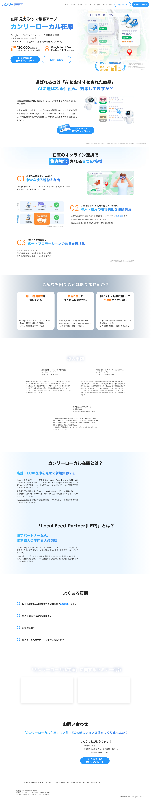

2026-05-28時点、Playwrightレンダリング取得。Nuxt.js + Studio.Design 製の1ページSPA構成。
| # | セクション | 現状コピー | 評価 |
|---|---|---|---|
| 0 | ナビ | TOP / ローカル在庫とは / LFPとは / 導入事例 / よくある質問 / お問い合わせ / 資料DL | 良い 標準的構造 |
| 1 | ファーストビュー | 「在庫 見える化 で集客アップ」「カンリーローカル在庫」「Google ビジネスプロフィールと在庫情報の連携で、検索経由の新規流入が拡大。MEOのノウハウを活かし、集客効果を最大化します。」「130,000店舗以上に導入されているカンリーが運営」「Google Local Feed Partner(LFP)認定を取得」 | 致命的弱点 LFP希少性訴求が弱い／差別化軸が見えない |
| 2 | AI時代訴求 | 「選ばれるのは『AIにおすすめされた商品』」「AIに選ばれる仕組み、対応してますか？」 | 惜しい 上位カテゴリ「Agentic Commerce」連動が浅い |
| 3 | 3つの特徴 | 01: 検索から即来店につなげる新たな流入導線を創出／02: Google LFP認定取得→現場負担削減／03: MEOのプロ集団が広告・プロモーションの効果可視化 | 改善余地大 コピーが平凡／数値訴求弱い |
| 4 | お困りごと | 新しい集客施策／商品の魅力届けたい／問い合わせ対応負担 | 良い 痛みポイント整理OK |
| 5 | 導入事例 VoC | 嘉穂無線HD（グッデイ）／ビジョナリーHD（メガネスーパー）／ムラサキスポーツ の3社コメント | 良い VoC強い／業種別ターゲ拡張余地あり |
| 6 | サービス説明 | 「店舗・ECの在庫を見せて新規集客する」「LFP Trusted Partner認定」「130,000店舗の実績」 | 惜しい 「国内2社目」希少性が抜けている |
| 7 | LFPとは？ | LFPは公式パートナープログラムの説明／短期間・低コスト・自動更新 | 惜しい 「国内2社のみ」「mov等は監修のみ」の対比なし |
| 8 | FAQ | 在庫確認短縮 / 導入1〜2ヶ月 / 料金「お打ち合わせにて」 / 導入後サポート | 惜しい 料金完全非公開／業種別Q&A不在 |
| 9 | セミナー＋CTA | セミナー情報／お問い合わせ／資料DL | 良い CV装置複数あり |

現状：「Google Local Feed Partner(LFP)認定を取得」
問題：カンリー最強の差別化軸である「国内2社のみ」「日本で公式に運用できるのはカンリーを含む2社のみ」が前面に出ていない。「LFP認定」だけでは、競合mov（GBPエキスパート監修のみ）との明確な差が分からない。
改善：ファーストビューで「国内2社目のGoogle Local Feed Partner（LFP）認定 / 日本で『公式に』ローカル在庫を運用できるのはカンリーを含む2社のみ」と即明示。
現状：競合への言及・撃ち返しコンテンツが一切なし。
問題：movは独自カテゴリ用語『ローカルインベントリーマーケティング』で認知戦を展開中。BOOKOFF・ロフト・アンダーアーマー・ビックカメラ・ダイアナ・スギ薬局・二木ゴルフ等の導入実績で認知を取りに来ている。LP上で何も言及しないと、「LFPって何？」のbasic教育レイヤーで負ける可能性。
改善：新規セクション「カンリーLFPがなぜ重要か」を追加し、「Google公式認定パートナー（カンリー）」vs「GBPエキスパート監修（mov）」の差を明示。直接競合名は出さなくてOK、構造的差別化として描く。
「AIに選ばれる仕組み、対応してますか？」セクションは方向性は正しいが、上位カテゴリ「Agentic Commerce」「NRF26テーマ『検索の終わり、AI購買時代』」との連動が浅い。Co-CEO新Vision「ヒトとAIの力で、店舗の集客力を上げる」とのナラティブ統一も弱い。
改善：AIセクションをAgentic Commerce / Why Now? セクションに格上げし、(1)NRF26テーマ引用、(2)Walmart×Google CEO対談言及、(3)『来店型エージェンティックコマースの分水嶺は在庫データの鮮度』というカンリーの主張を提示。
現状：「検索から即来店につなげる新たな流入導線を創出」「導入・運用の現場負担を徹底削減」「広告・プロモーションの効果を可視化」
問題：痛みベース／成果ベースのコピーになっていない。「※60店舗規模のホームセンターでの事例」と注釈はあるが、具体的数値（例：来店CV+30%／問合せ削減80%等）がない。
改善：各特徴に痛みベースのコピー＋ロンチ3社の具体数値の例示を追加。
VoC 3社（嘉穂無線HD＝HC／ビジョナリーHD＝アイウェア／ムラサキ＝スポーツ）はあるが、業種別の「あなたの業界ではこう効く」セクションがない。HC・アパレル・スポーツ・アイウェア・ドラッグ・家電・ホームセンター・百貨店 等の業種別タブ／業種別1pagerDL動線が欲しい。
FAQの料金回答が「店舗数や商品数、データ連携形式により異なる／詳細はお打ち合わせ」のみ。最低限「店舗数50〜の場合の目安レンジ」程度の開示は検討余地（藤林・神田と相談）。完全非公開は『LFP独占の希少性プレミアム』と整合する戦略選択肢でもあるが、リード獲得には不利。
追加候補：（a）業種別1pager DL（小売／HC／アパレル別）／（b）LFP適合チェッカー（10問程度の診断）／（c）ROI試算ツール（店舗数×SKU数で来店CV増分を試算）／（d）セミナー動画オンデマンド。Sales Marker のmicro-CV診断ツールとして既にスキル化済み（sm-diagnosis-tool-builder）— 横展開可能。
カンリー全社の強み数値（月次解約率0.52%／ARPA推移／CAGR 175.7%／契約社数3年で1.77倍）や、Google年1万店舗コミットの『信任』数値も訴求可能。シリーズD投資家説明資料との整合も含めて検討。
既存ファーストビュー「在庫 見える化 で集客アップ」を起点に、3軸（公式性／時代潮流／成果）で書き分け。藤林さん＋宮本＋木下で1案選定→A/Bテスト推奨。
現状を保ちつつ、致命的②（mov対抗）・重要①（Agentic Commerce）・重要③（業種別）を埋める3セクション新設。
「国内2社目」希少性をHeroで即訴求。LFP認定バッジを大きく配置。
NRF26テーマ引用／Walmart×Google CEO対談／『今、ここにある在庫』が分水嶺を1セクションで。
各特徴にロンチ3社の具体数値の例示を追加。
痛みポイント整理は良いので維持。
HC／アパレル／スポーツ／アイウェア／ドラッグ／家電／百貨店 別の刺さり方＋業種別1pagerDL。
嘉穂無線HD・ビジョナリーHD・ムラサキの3社に加え、Tier1の小売チェーン顧客のコメントを増強。
機能説明セクションは維持。
「Google公式認定パートナー」vs「GBPエキスパート監修のみ」の構造差を表で。代理店契約集約済の堀も。
「国内で運用可能2社のみ」「年1万店舗コミット」等の認定の重み具体化。
業種別の質問（HCはSKU多くて大変？／アパレルの色サイズ別在庫は？）を追加。料金は段階開示検討。
資料DL／問合せ／セミナーに加え、業種別1pager／LFP適合チェッカー／ROI試算ツール／オンデマンド動画。
カンリー店舗集客との統合運用訴求／親GTM-A連動／13万店舗の安心感。
直接競合名は明示しないが、構造的差別化として読み手に届く形で描く（『監修パートナー』vs『公式認定パートナー』の対比など）。
| 論点 | カンリー（自社）— LPで強調すべき | mov（競合）— LPでの撃ち返しコピー候補 |
|---|---|---|
| Googleとの関係性 | Google公式 Local Feed Partner（LFP）国内2社目認定（2025年10月）。日本で運用可能2社のみ。 | 「監修パートナー」ではなく「認定パートナー」。Google公式プログラムの『お墨付き』があるかないかが分水嶺。 |
| 代理店経路 | 広告代理店は全員カンリーLFPを担ぐ契約に集約済（4/15判明）。代理店経由ローカル在庫はカンリーがデファクト。 | 「日本のローカル在庫は、ほぼ全ての広告代理店がカンリー経由で扱っています」（事実情報として） |
| 初期導入 | LFP認定により「在庫確認」工程が短縮可能。1〜2ヶ月で運用開始。 | 「LFPがない場合の在庫確認工程がいかに重い負荷か」を解説するセクションで間接的に差別化。 |
| 顧客基盤 | 13万店舗の店舗集客運用実績。MEO/GBP一括管理基盤との統合運用。 | 「単体ローカル在庫サービスではなく、店舗集客基盤との統合で最速ローンチ」を強調。 |
| 導入実績の質 | 嘉穂無線HD・ビジョナリーHD・ムラサキスポーツ（小売エンプラ／VoC公表済）。 | BOOKOFF・ロフト・アンダーアーマー・ビックカメラ・ダイアナ・スギ薬局・二木ゴルフ等（mov側、参考）。同等以上の実績拡充が4Q重点。 |